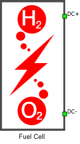
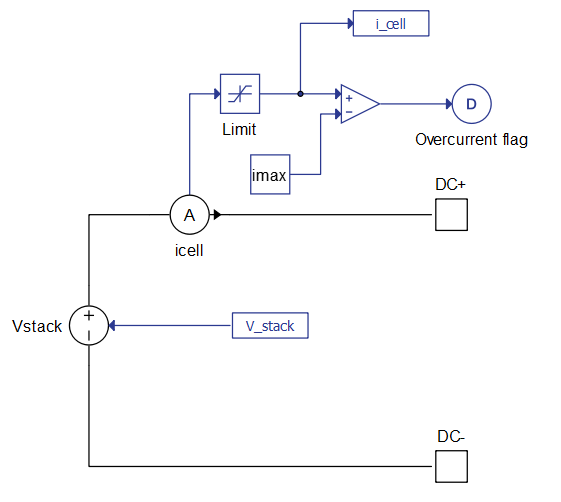
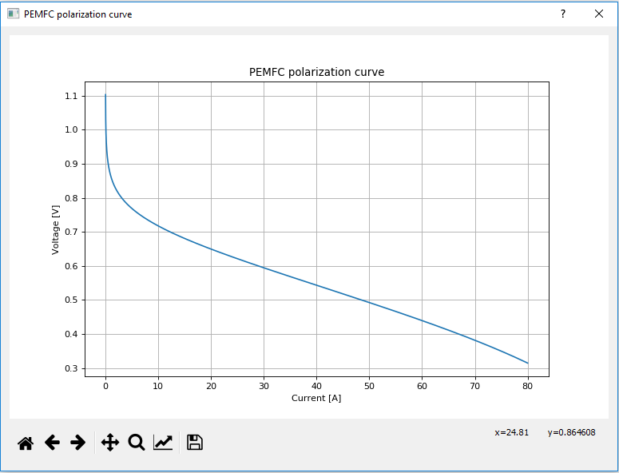

Fuel Cell
Proton Exchange Membrane (PEM) Fuel Cell component in Schematic Editor

PEM Fuel Cell modeling
The hydrogen fuel cell component is implemented using a signal controlled voltage source, a current measurement, and a fuel cell signal processing model as seen in Figure 2. The proton exchange membrane fuel cell in particular is known to have slower reaction kinetics at the cathode side (air) than at the anode side (hydrogen). As consequence, the cathode activation loss is an order of magnitude higher than the anode activation loss. In this PEM fuel cell model, the anode side activation loss effects are neglected for the sake of simplification purposes.

Considering this, the PEM fuel cell stack output terminal voltage can be expressed by the following equations:
where is the thermodynamic voltage of the fuel cell, is the voltage drop on the electrolyte ionic resistance and is the cathode activation losses voltage.
Thermodynamic voltage of the PEM fuel cell can be modeled from the Nernst equation:
where is the temperature of the cell in Kelvins, is the oxygen pressure at the cathode catalytic interface in atm, is the hydrogen pressure at the anode catalytic interface in atm, R=8.314 is the universal gas constant in J/(mol·K), and F=96485.3 is the Faraday constant in C/mol.
The differences between the gas supply pressures and the catalyst interface pressures (effective gas pressure for electrochemical reactions) are due to the gas diffusion phenomenon through the porous electrodes in a PEM fuel cell, which can be modeled by Fick's law:
where is the gas diffusion layer thickness, is the effective gas diffusion coefficient, and the reactant gas (hydrogen and oxygen) molar flow rates are directly related to the fuel cell current i:
The effective gas diffusion coefficients , can be obtained from the binary gas diffusion coefficient and the Bruggemann correction term for the porous electrode of the fuel cell:
where is the binary gas diffusion coefficient in m2/s, between the reactants , and product , ε is the corresponding gas diffusion layer porosity, and is the corresponding gas diffusion layer tortuosity.
Cathode activation losses voltage can be modeled using the following differential equation:
where is the single fuel cell cathode double layer capacitance in Farads, i is the fuel cell current in Amperes, and is the cathode steady-state activation loss value, calculated using the well-known Tafel equation:
where is the electrochemical reaction symmetry factor (usually between 0.2 and 0.5), is the Membrane Electrode Assembly geometric surface area of a single cell in m2, and is the cathode exchange current density in A/m2, calculated by the following empirical equation:
where and are two empirical parameters that need to be identified through fuel cell experimental tests, and is the constant representing oxygen activation energy at electrode platinum interface (66000 J/mol).
Electrolyte ionic resistance voltage drop can be calculated from the membrane resistance:
and
where is the PEM thickness, and (S/m) is the proton conductivity of a Nafion type polymer membrane, which is highly related to the water content of the membrane. Its value can be calculated by:
Thermal calculation:
The fuel cell's energy balance can be calculated by considering the various energy terms (sources, sinks, etc.) during fuel cell operation:
where is the heat removal rate from a single fuel cell by the cooling circuit (either forced cooling or natural cooling) in J/s, is the total theoretical thermodynamic power produced during the electrochemical reaction in J/s, is the hydrogen-oxygen reaction enthalpy change in the fuel cell at a higher heating value (286 kJ/mol with liquid water as product), and is the fuel cell total output electrical power (W).
Using the heat transfer formula, cell temperature can be calculated with:
where hA is the cooling coefficient in W/K, Cp is the equivalent thermal capacity of the fuel cell in J/(kg*K), M is the mass of the fuel cell in kg, and is the ambient temperature in Kelvins.
General (Tab)
- Parameter definition
- Specifies the set of parameters by choosing between Simplified, Detailed and Scientific.
- If Simplified is selected as Parameter definition, the following properties can be
used:
- Preset Fuel Cell
- Provides a set of predetermined Fuel Cell staks found on the market.
- Voltage at 0 A and 1 A
- 2-dimensional vector representing fuel cell voltages at 0 A and 1 A.
- Nominal operating point
- 2-dimensional vector representing nominal fuel cell curent (A) and voltage (V).
- Maximum operating point
- 2-dimensional vector representing fuel cell curent (A) and voltage (V) at maximum power.
- Preset Fuel Cell
- If Detailed is selected as Parameter definition, the following properties can be
used:
- Preset Fuel Cell
- Provides a set of predetermined Fuel Cell staks found on the market.
- Voltage at 0 A and 1 A
- 2-dimensional vector representing fuel cell voltages at 0 A and 1 A.
- Nominal operating point
- 2-dimensional vector representing nominal fuel cell curent (A) and voltage (V).
- Maximum operating point
- 2-dimensional vector representing fuel cell curent (A) and voltage (V) at maximum power.
- Number of cells
- Number of fuel cells per fuel cell stack (connected in series).
- Nominal stack efficiency
- Fuel cell efficiency at nominal operating point.
- Operating temperature
- Constant temperature of fuel cell.
- The property is disabled if temperature input is enabled.
- Nominal fuel flow rate
- Constant fuel flow rate of fuel cell.
- The property is disabled if fuel flow rate input is enabled.
- Nominal air flow rate
- Constant air flow rate of fuel cell.
- The property is disabled if air flow rate input is enabled.
- Nominal supply presure
- 2-dimesional vector representing constant supply pressure of fuel and air.
- The property is disabled if both input representing supply pressure of fuel and supply pressure of air are enabled. If one input is enabled, and other is disabled, the nominal value corresponing to enabled input will be ignored.
- Nominal composition
- 3-dimesional vector representing constant percentage of hydrogen in the fuel, oxygen and water in the oxidant.
- If one of the relevant inputs is enabled (Fuel compoistion, Air composition), the nominal value corresponing to enabled input will be ignored.
- Preset Fuel Cell
- If Scientific is selected as Parameter definition, the following properties can be
used:
- Number of cells
- Number of fuel cells per fuel cell stack (connected in series)
- The parameter scales the output voltage by the number of fuel cells without any additional effects.
- Signal outputs
- Enables/disables signal processing outputs. When enabled, a signal output port appears on the component.
- Available outputs are in the following order:
- Temperature of the fuel cell(s)
- Terminal output voltage of the fuel cell stack
- Terminal fuel cell current
- Output voltage of a single fuel cell
- Number of cells
- Execution rate
- Signal processing execution rate of the fuel cell component
- CPU core
- Sets the CPU marker's value for the signal processing part of the sub-circuit.
Input (Tab)
This Tab is only available if Detailed is selected as Parameter definition.
- Temperature
- Enables/disables signal processing input for controlling the fuel cell temperature
- Fuel flow rate
- Enables/disables signal processing input for controlling the fuel flow rate
- Air flow rate
- Enables/disables signal processing input for controlling the air flow rate
- Fuel supply pressure
- Enables/disables signal processing input for controlling the fuel supply pressure
- Air supply pressure
- Enables/disables signal processing input for controlling the air supply pressure
- Fuel composition
- Enables/disables signal processing input for controlling the percentage of hydrogen in the fuel
- Air composition
- Enables/disables signal processing input for controlling the percentage of oxygen in the oxidant
Dynamics (Tab)
This Tab is only available if Simplified or Detailedis selected as Parameter definition.
- Response time
- Enables/disables activation layer voltage using the double layer capacitance dynamics
- Voltage undershoot
- Enables/disables activation layer voltage using the double layer capacitance dynamics
- Available only if Detailed is selected as Parameter definition.
- Peak oxygen utilization
- Enables/disables activation layer voltage using the double layer capacitance dynamics
- Available only if Detailed is selected as Parameter definition.
Electrochemical characteristic (Tab)
This Tab is only available if Scientific is selected as Parameter definition.
- Double layer capacitance dynamics
- Enables/disables activation layer voltage using the double layer capacitance dynamics
- When enabled, , where is the activation layer voltage, and is the cathode steady-state activation loss.
- When disabled, is equal to
- C dl
- Available if Double layer capacitance dynamics is enabled
- Single fuel cell double layer capacitance
- Alpha constant
- Electrochemical reaction symmetry factor (usually between 0.2 and 0.5)
- Beta constant
- Affects exchange current density of cathode electrode and the value of cathode activation loss (needs to be determined empirically)
- Gamma constant
- Affects exchange current density of cathode electrode and the value of cathode activation loss (needs to be determined empirically)
Fluidic coefficients (Tab)
This Tab is only available if Scientific is selected as Parameter definition.
- D O2-H2O
- Binary oxygen gas to vapor diffusion coefficient
- D H2-H2O
- Binary hydrogen gas to vapor diffusion coefficient
Fuel cell geometry (Tab)
This Tab is only available if Scientific is selected as Parameter definition.
- Eta GDL
- The gas diffusion layer porosity, which is used to calculate the effective gas diffusion coefficient in the fuel cell porous electrode
- Tau GDL
- The gas diffusion layer tortuosity, which is used to calculate the effective gas diffusion coefficient in the fuel cell porous electrode
- Delta GDL
- The gas diffusion layer thickness
- A MEA
- The Membrane Electrode Assembly (MEA) surface area of a single fuel cell (this property represents the geometric surface area and not the effective surface area of the catalyst)
- Delta MEM
- The proton exchange membrane thickness
Thermal model (Tab)
This Tab is only available if Scientific is selected as Parameter definition.
- Temperature model type
- Specifies the temperature model type
- Available values are Static model and Dynamic model
- Static model forces the temperature of the fuel cell to be constant and equal to Tcell
- Dynamic model enables heat transfer equations and calculates temperature based on cooling inlet/ambient temperature Tcooling, thermal model parameters, and fuel cell conditions
-
Tcell
- Available if Temperature model type is set to Static model
- Fuel cell temperature [K]
- The entered value is kept constant during the simulation
-
Tcooling
- Available if Temperature model type is set to Dynamic model
- The cooling inlet temperature (for forced cooling) or the ambient temperature (for natural cooling) [K]
-
Cp
- Available if Temperature model type is set to Dynamic model
- Equivalent thermal capacity of a single fuel cell's materials [J/(kgK)]
-
hA
- Available if Temperature model type is set to Dynamic model
- The cooling coefficient (forced or natural) of the fuel cell (a product of the heat transfer coefficient in W/(m2*K) and the cell’s effective cooling surface in m2)
- In the case of forced cooling the heat transfer coefficient is the fluid-solid surface's forced heat transfer coefficient of the coolant (water or air in most cases). The effective cooling surface is the total contact surface area of cooling channels
- In the case of natural cooling the heat transfer coefficient is the surface's natural heat transfer coefficient of air and the effective cooling surface is the external surface area of fuel cell stack exposed to ambient air
-
M
- Available if Temperature model type is set to Dynamic model
- The mass of a single fuel cell [kg]
Operating conditions (Tab)
This Tab is only available if Scientific is selected as Parameter definition.
- P H2
- Hydrogen gas supply pressure of the fuel cell [atm]
- P O2
- Oxygen gas supply pressure of the fuel cell [atm]
- If supplied by air, a coefficient of 21% should be used, representing the O2 molar fraction in air
- Lambda mem
- Membrane water content
Polarization curve (Tab)
- Imax
- The maximum current of the polarization curve [A]
- If during the simulation, the terminal current of the fuel cell component increases beyond this value an overcurrent flag will be raised to 1. This signal measurement is located inside the specific fuel cell component and it is always enabled. If the terminal fuel cell current drops below the Imax value, overcurrent flag will again return to 0
The fuel cell's static characteristics are represented by its polarization curve. This curve shows the output voltage of a single fuel cell as function of its current when the Preview Polarization Curve button is clicked.
